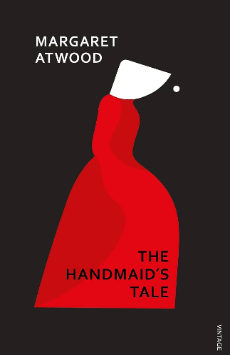
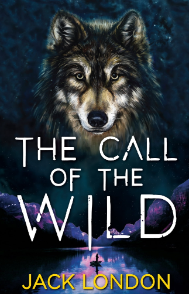
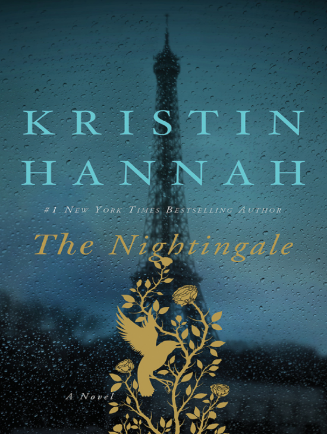
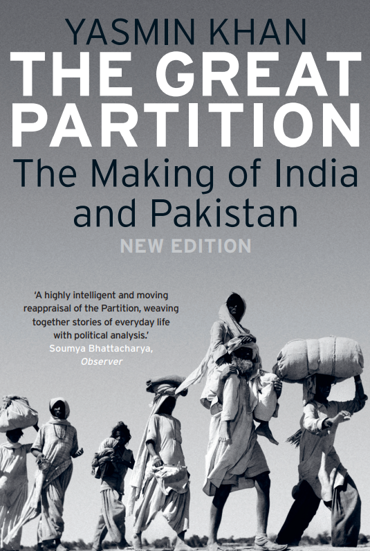

We
Yevgeny Zamyatin
Review
"We" by Yevgeny Zamyatin is a classic work of dystopian science fiction that holds a significant place in the genre's history. Written in 1920, this novel serves as a precursor to later dystopian masterpieces like George Orwell's "1984" and Aldous Huxley's "Brave New World." Zamyatin's work offers a thought-provoking exploration of totalitarianism, individuality, and the human spirit. The story is set in a future society known as the One State, where individuality is suppressed, and the government exercises absolute control over every aspect of citizens' lives. The narrative is presented in the form of journal entries written by the protagonist, D-503, a loyal mathematician and engineer who is working on the construction of the Integral, a spaceship meant to spread the One State's ideology to other planets. However, D-503's worldview begins to unravel as he falls in love with a woman named I-330 and becomes involved in a secret group that seeks to break free from the oppressive regime. One of the book's strengths lies in its vivid depiction of a highly regimented and dehumanized society. Zamyatin's writing creates a chilling atmosphere where surveillance, conformity, and the suppression of emotions are the norm. The use of mathematical and numerical language throughout the narrative serves to reinforce the theme of dehumanization and loss of individuality. "We" explores the conflict between the desire for personal freedom and the allure of conformity and security. The characters, particularly D-503, grapple with their awakening sense of self and the consequences of rebelling against a system that controls every aspect of their lives. This internal struggle adds depth and complexity to the story. While "We" is a classic of dystopian literature, it may be challenging for some readers due to its unique narrative style and the philosophical and political themes it explores. However, for those interested in thought-provoking literature that examines the consequences of totalitarianism and the human drive for freedom, "We" is a must-read. In summary, Yevgeny Zamyatin's "We" is a thought-provoking and influential work of dystopian science fiction. Its exploration of themes related to totalitarianism, individuality, and the human spirit continues to resonate with readers, making it a significant contribution to the genre.

The Handmaid's Tale
Margaret Atwood
Review
"The Handmaid's Tale" by Margaret Atwood is a haunting and thought-provoking dystopian novel that has captivated readers since its publication in 1985. Set in the near-future Republic of Gilead, a theocratic and authoritarian regime that has replaced the United States, the novel explores themes of gender oppression, religious extremism, and the loss of individual freedoms. The story is narrated by Offred, a woman who has been reduced to the status of a "Handmaid." In this dystopian society, Handmaids are forced to bear children for the ruling class, known as the Commanders, in a bid to combat widespread infertility. Women's rights have been stripped away, and they are subjected to strict societal roles and surveillance. Atwood's portrayal of this oppressive world is chillingly vivid, and her exploration of gender-based subjugation is both harrowing and thought-provoking. One of the novel's strengths is its powerful and evocative prose. Atwood's writing draws readers into the mind of Offred, allowing them to feel her fear, frustration, and longing for the freedom she once knew. The use of a first-person narrative adds a personal and intimate dimension to the story, making it all the more compelling. "The Handmaid's Tale" is a work of speculative fiction, but it draws on historical and contemporary themes, particularly the subjugation of women and the dangers of religious extremism. This grounding in real-world issues lends the novel a sense of relevance and urgency that continues to resonate with readers. Atwood's exploration of the resilience of the human spirit in the face of extreme adversity is a central theme of the novel. Through Offred's experiences and her acts of resistance, the book offers a message of hope and the enduring desire for freedom and autonomy. While "The Handmaid's Tale" is a powerful and thought-provoking novel, it can be quite disturbing and emotionally intense, as it deals with themes of sexual violence and oppression. Readers should be prepared for a challenging but rewarding reading experience. In conclusion, Margaret Atwood's "The Handmaid's Tale" is a seminal work of dystopian literature that has had a profound impact on both literature and popular culture. Its exploration of gender, power, and resistance remains as relevant today as it was when it was first published, making it a must-read for those interested in thought-provoking and socially relevant literature.

The Call of the Wild
Jack London
Review
"The Call of the Wild" by Jack London is a classic adventure novel that tells the compelling story of Buck, a domesticated dog who is thrust into the harsh and unforgiving wilderness of the Yukon during the Klondike Gold Rush of the late 19th century. London's novel is a powerful exploration of the primal instincts that drive both humans and animals and the struggle for survival in the wild. The novel opens with Buck living a comfortable life as a pet in California, but his world is upended when he is stolen and sold into the brutal world of sled dog teams in the Yukon. Buck's transformation from a domesticated dog to a wild and cunning creature is at the heart of the story. London skillfully portrays Buck's journey as he taps into his ancestral instincts and adapts to the brutal demands of the wilderness. One of the strengths of "The Call of the Wild" is London's vivid and evocative writing style. He immerses readers in the harsh beauty of the Yukon, describing the landscape, the weather, and the characters in meticulous detail. This immersive storytelling allows readers to feel the cold, hear the howling of wolves, and experience the dangers and triumphs of the wilderness alongside Buck. The novel also delves into deeper themes, including the conflict between civilization and the natural world, the concept of the "call of the wild" as an innate drive to return to one's primal nature, and the idea of survival of the fittest. Buck's journey serves as a metaphor for the broader human experience, and readers are invited to reflect on their own connection to the wild and their primal instincts. While "The Call of the Wild" is a gripping adventure story, it also touches on themes of cruelty and exploitation, particularly in the treatment of animals during the Gold Rush era. These themes add depth to the narrative and invite readers to consider the ethical treatment of animals. In conclusion, Jack London's "The Call of the Wild" is a timeless adventure novel that explores the transformation of a domesticated dog into a wild and primal creature in the unforgiving wilderness. London's evocative writing and exploration of deeper themes make this novel a classic work of literature that continues to resonate with readers of all ages.The Discovery of India
Jawaharlal Nehru
Review
"The Discovery of India" by Jawaharlal Nehru is a monumental work of historical and philosophical literature that offers a comprehensive exploration of India's rich history, culture, and civilization. This book is Nehru's magnum opus and reflects his deep love for his country, his commitment to the ideals of secularism and democracy, and his vision for a modern India. Written during his imprisonment in 1942-1946, "The Discovery of India" is not just a history book but a reflection on India's past, present, and future. Nehru takes readers on a journey through India's ancient and medieval history, discussing its great civilizations, diverse cultures, and the impact of foreign invasions and colonialism. One of the book's strengths is Nehru's ability to blend historical accounts with his own personal experiences and insights. His writing is both erudite and accessible, making complex historical and philosophical concepts understandable to a wide range of readers. Nehru's passion for India's cultural diversity, its spiritual heritage, and its contributions to the world is palpable throughout the book. "The Discovery of India" also examines the role of religion, philosophy, and social movements in shaping India's identity. Nehru places a strong emphasis on the country's syncretic and inclusive traditions, highlighting the coexistence of various religions and belief systems. Nehru's book is not just a celebration of India's past but also a vision for its future. He outlines his vision for a modern, secular, and democratic India, emphasizing the importance of education, scientific progress, and social justice. His commitment to these ideals played a significant role in shaping India's post-independence trajectory. While "The Discovery of India" is a monumental work, it can be quite dense and lengthy, requiring readers to invest time and concentration. However, for those interested in gaining a deeper understanding of India's history, culture, and the philosophical underpinnings of its nationhood, this book is an indispensable resource. In summary, Jawaharlal Nehru's "The Discovery of India" is a profound and insightful exploration of India's past, present, and future. It is a testament to Nehru's intellectual prowess and his enduring love for his homeland. This book remains a classic work that continues to inspire and enlighten readers about the essence of India.

The Nightingale
Kristin Hannah
Review
"The Nightingale" by Kristin Hannah is a historical fiction novel that tells a moving and powerful story of two sisters, Vianne and Isabelle, during World War II in Nazi-occupied France. The novel explores themes of love, sacrifice, resistance, and the indomitable human spirit in the face of unimaginable adversity. One of the book's strengths is its compelling and well-developed characters. Vianne and Isabelle are complex and relatable protagonists, each with their own distinct personalities and struggles. Vianne is a mother and wife who initially tries to keep her family safe by complying with the German occupation, while Isabelle is a rebellious and passionate young woman who joins the French Resistance to fight against the Nazis. Their contrasting journeys and growth over the course of the novel provide depth and emotional resonance to the story. Kristin Hannah's writing is evocative and emotionally charged, allowing readers to immerse themselves in the world of wartime France. She vividly portrays the horrors and hardships of war, as well as the acts of bravery and resistance that emerged in the face of oppression. The novel's sense of time and place is richly detailed, making it easy for readers to connect with the characters and their experiences. "The Nightingale" also explores the complexities of love and family relationships under the shadow of war. It delves into the choices people make in times of crisis, the sacrifices they are willing to endure for the ones they love, and the resilience of the human spirit. The book sheds light on the often-overlooked role of women in wartime resistance efforts. Isabelle, in particular, represents the courage and determination of women who played a vital role in resisting Nazi occupation. Her character serves as a tribute to the many unsung heroes of history. While "The Nightingale" is a compelling and emotionally charged novel, it does contain intense and heart-wrenching moments that may be difficult for some readers to digest. The brutality of war and the suffering of the characters are portrayed with realism, and this can be emotionally challenging. In conclusion, Kristin Hannah's "The Nightingale" is a powerful and emotionally gripping historical novel that captures the human experience during World War II in Nazi-occupied France. Its well-drawn characters, evocative writing, and exploration of themes like love, sacrifice, and resistance make it a compelling and memorable read for those interested in historical fiction and stories of resilience in the face of adversity.
